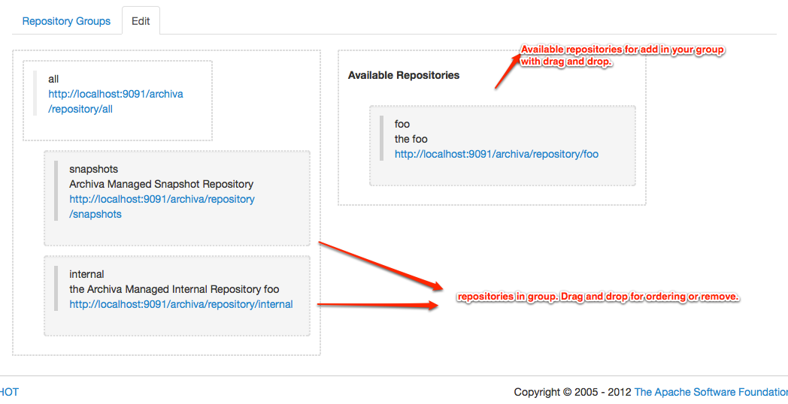

Virtual Repositories
This is a new feature for Archiva 1.1. The main advantage of virtual repositories (or repository groups) is that you only need to specify one URL instead of multiple repository URLs if you are using more than 1 proxy repository.
For example, you have the following configuration in your settings.xml:
<settings>
<!-- omitted xml -->
<profiles>
<profile>
<id>Repository Proxy</id>
<activation>
<activeByDefault>true</activeByDefault>
</activation>
<repositories>
<repository>
<id>internal.releases</id>
<url>http://localhost:8080/repository/internal.releases/</url>
<releases>
<enabled>true</enabled>
</releases>
<snapshots>
<enabled>false</enabled>
</snapshots>
</repository>
<repository>
<id>third.party.repo</id>
<url>http://localhost:8080/repository/third.party.repo/</url>
<releases>
<enabled>true</enabled>
</releases>
<snapshots>
<enabled>false</enabled>
</snapshots>
</repository>
<repository>
<id>snapshots</id>
<url>http://localhost:8080/repository/snapshots/</url>
<releases>
<enabled>false</enabled>
</releases>
<snapshots>
<enabled>true</enabled>
</snapshots>
</repository>
</repositories>
</profile>
<!-- omitted xml -->
</profiles>
<!-- omitted xml -->
</settings>If you have a virtual repository configured in Archiva, you only need to configure this in your settings.xml:
<settings>
<!-- omitted xml -->
<profiles>
<profile>
<id>Repository Proxy</id>
<activation>
<activeByDefault>true</activeByDefault>
</activation>
<repositories>
<repository>
<id>internal.releases</id>
<url>http://localhost:8080/repository/[repository_group_id]/</url>
</repository>
</repositories>
</profile>
<!-- omitted xml -->
</profiles>
<!-- omitted xml -->
</settings>And you'll still be able to get all the artifacts that you need. See Configuring Virtual Repositories section for the steps on how to setup a virtual repo in Archiva.
How It Works
When Archiva receives a request with a virtual repo (or repo group) URL, Archiva would look for the requested artifact from the repositories under that group. It would only check the repositories the user has permission to access (meaning only those repositories which the user has an Obeserver role for). The first resource found for the requested artifact would be returned.
Prior to version 1.4-M2, Virtual repositories can return a Maven index in the path /.indexer path
Configuring Virtual Repositories
Below are the steps for setting up the virtual repositories:
- In the webapp, go to the Repository Groups page. To create a virtual repository or repository group, go to add tab
- To add a repository drag and drop available repositories.
- Now add the virtual repository URL http://[host]:[port]/repository/[repository_group_id]/ into your settings.xml the same way you configure regular repositories -- as a mirror or as an additional repository.
- If the repositories under the group are secured, you must set your Archiva login credentials in your settings.xml as well. Please take note that the server id should match the repository group identifier.
Webdav Browse
Webdav Browse for a virtual repository is a read-only view. It displays the merged contents of all the repositories under that repository group. Just type the url of the virtual repository in your browser in order to view its contents. User will be asked to authenticate if the 'guest' account is not enabled for the repositories. Only those repositories which the user has permission to access will be shown.
Merged index
With version 1.4-M2, you can download a merged index for a virtual repository. This merged index is generated "on the fly" with merging repositories index for which the current user has karma. This merged index is available in the path .indexer .
To not generate this merged index on each request, there is a ttl (time to live) value for build merged index. It can be configured in the repository group configuration. This ttl has a default value of 30 minutes.